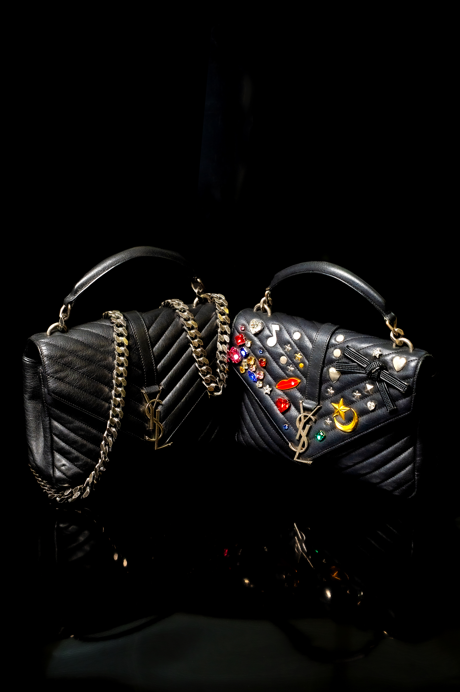

誠実なまなざしで、ブランドバッグに新しい命と循環の未来を。
2012年設立のEco Brand Japanは、Hermès、Chanel、Louis Vuittonなどの名だたるメゾンからラグジュアリーバッグやアクセサリーを厳選し、価値あるアイテムに新たな章を与えています。私たちは循環型経済の中で各バッグのクラフトマンシップを尊重し、常に真贋を保証します。
経験豊富な専門チームが鑑定・修復・準備を行い、世代を超えて喜びをもたらします。コレクションは品質と希少性で厳選され、ファッションの歴史の一部を責任を持って所有する機会をご提供します。

当社が提供するすべてのアイテムは専門家が徹底的に検証しています。透明性への取り組みにより、正真正銘の商品と正確な説明のみをお届けします。
ラグジュアリーは使い捨てであるべきではないと私たちは考えます。美しい作品を循環させることで、素材と職人技への敬意を示します。
仕入先やお客様との関係は敬意と信頼に基づいています。中古ラグジュアリーの売買を快適で透明な体験にすることを目指します。

